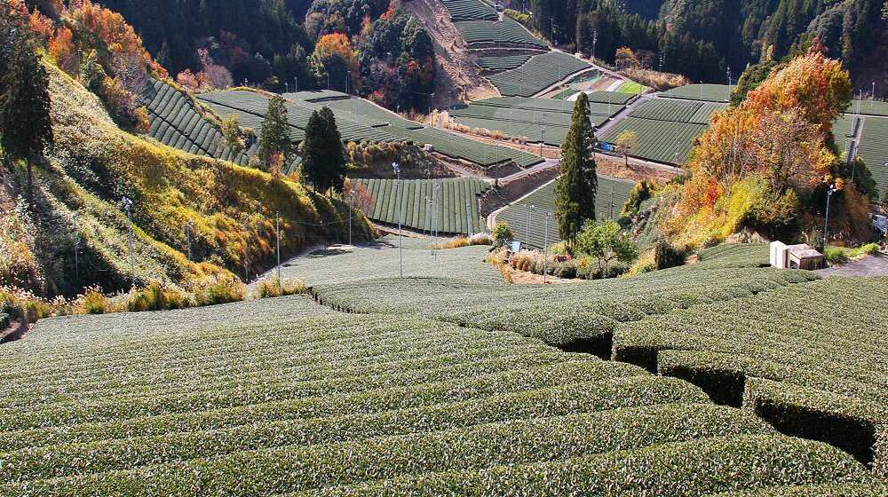
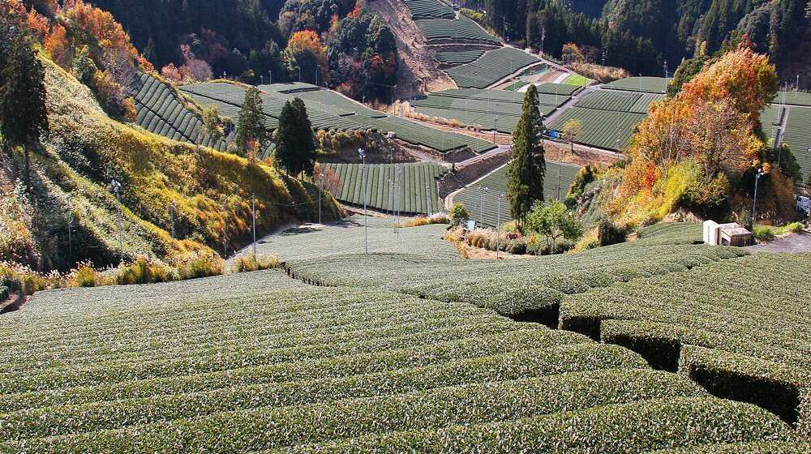

Chubu
 

Introduction
The Chubu area is a hilly area of Honshu, Japan's central region. Aichi, Fukui, Gifu, Ishikawa, Nagano, Niigata, Shizuoka, Toyama, and Yamanashi are among its nine prefectures. It is home to Mount Fuji, Japan's highest peak at 3,776 metres, as well as the Japan Alps, a mountain range spanning Nagano, Toyama, and Gifu prefectures. The Japan Alps are a popular hiking and skiing destination with spectacular scenery, towering peaks, deep valleys, and lovely alpine flora.
Japan Alps
The Japan Alps are a group of mountain ranges that run across the centre of Honshu, Japan's biggest island. The Hida Mountains are in the north, the Kiso Mountains are in the centre, and the Akaishi Mountains are in the south. Mount Kita, at 3,193 metres, is the highest point in the Japan Alps. Mount Hotaka, Mount Yari, and Mount Ontake are further prominent summits. The region is noted for its diverse biodiversity, which includes several indigenous plant and animal species.
There are several hiking paths in the Japan Alps, ranging from short hikes to multi-day expeditions. The hiking season is most popular from late spring to early fall, when the weather is moderate and the mountain trails are clear of snow. During the winter, the region becomes a popular skiing and snowboarding destination.
Kakegawa Castle
Kakegawa Castle is a well-known tourist destination in Kakegawa City, Shizuoka Prefecture, Japan. It goes back to the 15th century and was important in Japan's feudal history. The castle has been renovated and rebuilt many times, with the most recent rebuilding taking place in 1994. Exploring the inside of the castle tower, where tourists may climb to the top level for breathtaking views of the city and surrounding environs, is one of the highlights of a visit to Kakegawa Castle. Visitors may observe the beautiful design of the castle and its different defence buildings along the route.
Summary
Chubu, the middle part of Japan's Honshu island, is a must-see for anybody interested in Japan's natural beauty, history, and culture. It has majestic mountain ranges, historic landmarks, and cultural attractions including Kakegawa Castle and its exquisite Japanese garden. It is also recognised for its tea culture, with tourists able to drink traditional Japanese tea at local tea estates. It also has some contemporary cities, like as Nagoya, which provide shopping, eating, and other metropolitan attractions while being surrounded by Chubu's natural beauty.